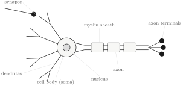
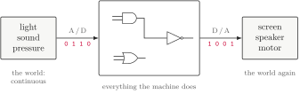
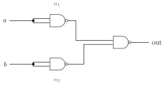
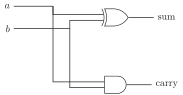
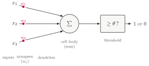

NJIT · CS 301 · INTRODUCTION TO DATA SCIENCE · FALL 2026 PDF
Meeting 1. The Neuron and the Gate
Act 1 The Biological Neuron · Act 2 Logic Gates and Certainty · Act 3 Computing a Neuron, Approximately
Unit I is organized around a single question:
A logic gate is written. Could a neuron be taught?
This first meeting introduces the two objects in that sentence — the biological neuron, a living cell, and the logic gate, the exact device computers are made of — and ends with a 1943 idea that connects them: a neuron, written as arithmetic. Everything else in the unit grows out of that construction.
Act 1. The Biological Neuron
1.1 Eighty-six billion, in kinds
Your brain runs on roughly 86 billion neurons. For decades the standard figure was “100 billion” — a round number that no measurement ever produced. Newer laboratory technique settled the question directly: dissolve brain tissue into a suspension, count the cell nuclei in samples of it, and scale up. The answer comes out near 86 billion on average — about 16 billion in the cerebral cortex and about 69 billion in the cerebellum. There is a small lesson smuggled inside the fact, and it is worth keeping for a course about drawing conclusions from data: a number with a measurement behind it beats a rounder one without.
A neuron is a cell — a strange-looking one, as the next section shows — and the 86 billion are not one cell repeated. Neurons come in kinds. Recent atlases of the human brain, built by reading out which genes individual cells express, sort them into 461 broad clusters and 3,313 finer ones: thousands of distinct types, differing in shape, in chemistry, in what they connect to, and in how they respond. Set the two numbers side by side and a design principle appears. Hundreds of kinds, billions of cells: each kind is repeated hundreds of millions of times. The repetition continues at the next scale up — small circuits of neurons, organized a particular way, occur again and again across the brain. The brain is a modular construction: a few designs, reused everywhere. Hold on to that thought, because the same principle shows up twice more before this meeting ends — once inside the computer, and once in the large AI systems built out of artificial neurons, which are themselves small modules repeated at enormous scale.
The counts: Azevedo et al., J. Comp. Neurol. 513 (2009), 532–541, doi:10.1002/cne.21974. The cell-type atlas: Transcriptomic diversity of cell types across the adult human brain, Science 382 (2023), doi:10.1126/science.add7046.
1.2 What one cell does

The branched structures on the left are dendrites, from the Greek dendron, a tree — and they do look like the branches of one. Signals from other neurons, chemical or electrical, arrive there, at contact points called synapses. What arrives is gathered into the cell body (the soma), and when the cell responds, the response travels down the axon — the long fiber to the right — and out through the axon terminals to other cells.
The operation of the cell, reduced to four steps:
- Signals arrive at the dendrites, at the synapses.
- Each synapse has a strength. One way to say it: a synapse decides how much attention its input gets. A strong synapse passes its signal on with force; a weak one barely registers it; some push in the negative direction and suppress the cell instead.
- The cell body adds up what arrives — each signal counted in proportion to the strength of the synapse it crossed.
- Past a threshold, the cell fires: a spike travels down the axon to the next cells. Below the threshold it stays quiet. The threshold is the cell’s own; different neurons have different ones.
Different kinds of neuron elaborate this in different ways, but this four-step description — arrive, weigh, add, compare — is the one the entire unit is built on. It is worth memorizing in exactly this form, because Act 3 will walk through the same four steps in the same order and do something surprising with them.
1.3 Nothing here is exact
Nothing in the previous section behaves like a symbol in an equation.
- Everything is continuous. The voltage across the cell’s membrane does not switch between levels; it slides through every value in a range. (A range, not an unbounded scale — the cell regulates itself, and activity that ran away unchecked would destroy it.)
- Signals are pulses, not values. A neuron does not hand the next cell a number. It emits spikes, and what carries information is their rate and their timing.
- The contact is chemical. At most synapses the signal crosses the gap as a puff of neurotransmitter molecules — and the crossing is not the same twice.
- There is noise. The same input twice does not produce the same response twice. Hear the same song twice and it does not trace the same pattern through your brain either time.
- There is no global clock. Nothing ticks all 86 billion cells forward in step. Be careful with what this does not say: timing matters a great deal in the brain — the timing of spikes carries information, down to the millisecond. What is missing is a shared metronome, not time itself.
- The strengths themselves change. Act, and the feedback of acting adjusts the synapses: strengths grow and shrink with use. That ongoing adjustment is learning. Step out of a dark room into bright sunlight and the first seconds are overwhelming — then the relevant cells adjust how much input they take, and the discomfort fades. Something physical changed, and what changed is strengths.
In four words: continuous, noisy, unclocked, changing. Nothing about this is a defect — it is how the tissue works, and it is the machinery you are thinking with right now. But now set it against the other machine in the room. A computer has none of these properties, by design and at considerable expense — and what a computer is actually made of is where this meeting goes next.
Act 2. Logic Gates and Certainty
2.1 The machine, from very far away
Seen from far enough away, a computer is a three-stage story:

The world on the left is continuous — light, sound, pressure, voltages from a microphone. At the machine’s boundary all of it is converted: measured, and written as strings of 0s and 1s. In the middle, everything the machine does — arithmetic, text, video, this very document — is operations on those 0s and 1s, nothing else. At the far boundary some of the results are converted back to the continuous world: pixels on a screen, sound from a speaker, motion in a motor. Not all of them come back out: a file written to disk or a message sent across the network stays 0s and 1s the whole way. Storage is physical too — a disk encodes each bit as the state of some small piece of solid matter — but what the physical state encodes is a discrete symbol.
Two side remarks belong here. First, “discrete” is a design choice, not a law of nature: there was once a whole branch of computing built on continuous signals — analog computers — and the quantum machines now being developed are different again. The machines this course runs on are the discrete kind. Second, the middle of the picture is not a free-for-all: a clock ticks, and internal results move forward only when it says they are ready. That clock is one more thing the brain of Act 1 does not have.
2.2 Two symbols, and nothing in between
Physically, a wire inside the machine is held at one of two voltage levels — high or low — and we write those states 1 and 0. The voltages in between exist, of course; the circuit is engineered so that they never mean anything. A wire crosses the in-between band as fast as possible and is only ever read as one symbol or the other. Compare the cell: its membrane voltage lives in the in-between and carries meaning everywhere in its range. A wire is built so that it never does. That engineering choice is where the computer’s exactness begins.
2.3 Three gates
The operations performed on bits are built from logic gates: small devices that take one or two bits and produce one bit, by a rule small enough to write out in full.
AND answers 1 only when both inputs are 1. OR answers 1 when at least one input is 1. NOT takes a single input and answers with the other symbol. In class you filled these tables in yourself; here they are complete:
| \(a\) | \(b\) | AND |
|---|---|---|
| 0 | 0 | 0 |
| 0 | 1 | 0 |
| 1 | 0 | 0 |
| 1 | 1 | 1 |
| \(a\) | \(b\) | OR |
|---|---|---|
| 0 | 0 | 0 |
| 0 | 1 | 1 |
| 1 | 0 | 1 |
| 1 | 1 | 1 |
| \(a\) | NOT |
|---|---|
| 0 | 1 |
| 1 | 0 |
A table like this is the complete truth about its gate — every input the gate will ever see, and the answer to each — which is why it is called a truth table. There is nothing more to know about AND than its four rows.
Gates also come in wider versions: an AND with three or more inputs answers 1 exactly when all of its inputs are 1, and real chips use such gates freely because they save space. Everything in this unit works with the two-input versions, and nothing is lost.
2.4 How many kinds of part does a computer need?
Inside a real processor you would find implementations of perhaps ten different logical operations — the three above, XOR, and other variants — because dedicated circuits are efficient. But that is engineering convenience. The interesting question is: how many different kinds of gate do you actually need, to build all the logic of a computer?
The answer is three: AND, OR and NOT are enough, given a clock, to build the entire logic of a processor. Can you do better? A student in class pointed out that two suffice — AND and NOT — because OR can be assembled out of them: \(a\) OR \(b\) answers 0 only when both inputs are 0, which is the same as NOT (NOT \(a\) AND NOT \(b\)).
And you can do better still. One kind of gate is enough: the NAND, which is simply AND followed by NOT — it answers with the opposite of what AND answers.
| \(a\) | \(b\) | NAND |
|---|---|---|
| 0 | 0 | 1 |
| 0 | 1 | 1 |
| 1 | 0 | 1 |
| 1 | 1 | 0 |
Each of the three basic gates can be written using nothing but NAND:
- NOT \(a\) = NAND\((a,a)\) — one NAND, both inputs fed from the same wire
- \(a\) AND \(b\) = NAND\(\big(\)NAND\((a,b),\,\)NAND\((a,b)\big)\)
- \(a\) OR \(b\) = NAND\(\big(\)NAND\((a,a),\,\)NAND\((b,b)\big)\)
One NAND, then two, then three — and no second kind of part anywhere in the list. Follow this to its conclusion and it says something remarkable: a single repeatable unit, copied a few billion times and wired together, is a complete processor.
2.5 Wiring gates together
The output of one gate can feed an input of another, and every computation the machine performs is, at bottom, such a wiring. The way to understand a small circuit is to trace it: fix the inputs, and push the values through gate by gate.
Example 2.1 Trace the circuit
Three NANDs, wired as below — the circuit you traced on the meeting’s worksheet. The values on the two internal wires are named \(n_1\) and \(n_2\).

Take the row \(a = 0\), \(b = 0\). The top gate receives \(a\) on both inputs, so \(n_1 = \text{NAND}(0,0) = 1\); likewise \(n_2 = 1\); and the output is \(\text{NAND}(1,1) = 0\). Now \(a = 0\), \(b = 1\): the top gate still sees \((0,0)\), so \(n_1 = 1\); the bottom gate sees \((1,1)\), so \(n_2 = 0\); and the output is \(\text{NAND}(1,0) = 1\). Before computing the row \((1,0)\), notice that the circuit is symmetric: swapping \(a\) and \(b\) swaps the roles of \(n_1\) and \(n_2\) and cannot change the output. So \((1,0)\) gives 1 with no further work. The last row, \((1,1)\), gives \(n_1 = n_2 = 0\) and output \(\text{NAND}(0,0) = 1\).
| \(a\) | \(b\) | \(n_1\) | \(n_2\) | out |
|---|---|---|---|---|
| 0 | 0 | 1 | 1 | 0 |
| 0 | 1 | 1 | 0 | 1 |
| 1 | 0 | 0 | 1 | 1 |
| 1 | 1 | 0 | 0 | 1 |
Read the last column: 0, 1, 1, 1. This three-NAND circuit is the OR gate — it is the third identity of the previous section, verified row by row.
Two things about the trace are worth saying out loud. First, on paper the gates were evaluated one at a time, but in the machine nothing waits: \(n_1\) and \(n_2\) settle simultaneously. Concurrency is not an advanced feature of computers; it is present in three gates. Second, the shortcut used for the row \((1,0)\) — spotting a symmetry instead of recomputing — is a genuine habit of the field, and it returns in Act 3.
2.6 A gate is exact
Now the point of this whole act. A gate’s four-row table is not a summary of its typical behavior; it is its entire behavior.
- The same inputs give the same answer, every time — and the same answer on every copy of the chip ever manufactured.
- No noise, no drift, no history: a gate remembers nothing about any input before this one. It answers, and is done.
- A clock says when each answer is settled and may be read.
Gates are exact because they were designed to be — set to their behavior at the factory, from construction. Place the two machines side by side. The cell of Act 1: continuous, noisy, unclocked, always changing. The gate: none of those four things — and an enormous engineering effort is spent, continuously, on keeping it that way.
2.7 A gate you can run
A gate is fixed hardware. But an entire computer is built out of gates, programming languages run on the computer — and in a programming language you can write the gate back down as code:
class AndGate:
def __call__(self, a, b):
return 1 if (a == 1 and b == 1) else 0
gate = AndGate()
for a, b, expected in [(0,0,0), (0,1,0), (1,0,0), (1,1,1)]:
assert gate(a, b) == expected
The loop at the bottom deserves a second look: it is the truth table, row by row. The table is not documentation — it is the test. A gate class that passes its own truth table is finished, and there is nothing else to check. That is what certainty buys: a complete specification small enough to test in full.
Notice also the loop in the construction itself: physical gates make a processor, the processor runs Python, and inside Python we have just rebuilt a gate — as software. Put enough of these software gates together and you could simulate an entire computer, inside the computer. This is not a party trick; it is daily practice. When engineers design a new chip, the design runs as exactly this kind of simulation — whole toolchains exist to translate a physical circuit design into a program — long before anything is manufactured.
Act 3. Computing a Neuron, Approximately
3.1 Gates can count
Wired together, gates do arithmetic. Two of them add one bit to one bit:

The XOR gate (1 when exactly one input is 1) produces the sum bit, and an AND produces the carry — check it against \(1 + 1\), which is 10 in binary: sum 0, carry 1. Chain copies of this circuit and you add 64-bit numbers. Multiplication is shifting and adding; comparison, subtraction, and the rest of arithmetic follow. Every number the machine ever adds, it adds with gates — there is no other machinery underneath.
None of this is an afterthought. Doing arithmetic is the very reason the first computers were built, and it was clear from the earliest machines of the 1940s that gates were up to the job. A pocket calculator is the idea in its purest form: not a full computer, but gates doing arithmetic, and nothing else. (The oldest game to play with one: type a large number and press the square-root key repeatedly. The display marches toward 1 — fast at first, then very slowly. Working out why it slows down is a good exercise for later in the course.)
3.2 Turn the question around
So: arithmetic is built out of gates.
Could a neuron be built out of arithmetic?
This is the question this unit — and, in a real sense, this course — is about. Note what the question does not ask. It does not ask for a neuron built directly out of gates, wire by wire. It asks for something easier and smarter: the machine already knows arithmetic — additions, multiplications, comparisons, the calculator’s operations — so build the neuron out of that, one level up. What follows compresses roughly a decade of thinking from the 1940s and 1950s into a page.
3.3 The cell, written as arithmetic
Return to the four-step description of Act 1, and translate each step — in order — into a piece of arithmetic. This is a modeling step: deciding what each biological feature becomes, as a number or an operation.
| signals cross the synapses | inputs \(x_1, \ldots, x_n\) |
| each synapse has a strength | a weight \(w_i\) for each input |
| the cell body adds what arrives | \(w_1x_1 + w_2x_2 + \cdots + w_nx_n\) |
| it fires past a threshold | output 1 if the sum is \(\geq \theta\), else 0 |
In prose: the incoming signals become numbers \(x_1, \ldots, x_n\) — real numbers, since the signals they stand for are continuous. Each synapse’s strength becomes a number too, the weight \(w_i\): a large weight is a synapse paying close attention to its input, a weight near zero is one ignoring it, and a negative weight pushes the cell away from firing. The cell body’s gathering becomes multiplication and addition — each input counted in proportion to its weight — and the firing decision becomes a comparison against the threshold, which by long tradition gets a Greek letter: \(\theta\). (Every course acquires its Greek letters eventually; this is our first.)
Writing \(w_1x_1 + w_2x_2 + \cdots + w_nx_n\) in full gets old quickly. A student in class supplied the standard shorthand, which says exactly the same thing:
The whole object — inputs, weights, sum, threshold — drawn as one device:

Three inputs are drawn; there could be any number. Notice that the picture is the neuron of Act 1 with every part replaced by its arithmetic counterpart — and that the weights and the threshold are the only things about it that can be changed.
Example 3.1 Does it fire?
Fix a unit with three inputs, weights \(w = (2, -1, 2)\), and threshold \(\theta = 3\) — the unit from the meeting’s worksheet. For each input, form the weighted sum and compare it with \(\theta\).
For \(x = (1, 0, 1)\): the sum is \(2 \cdot 1 + (-1) \cdot 0 + 2 \cdot 1 = 4\), and \(4 \geq 3\), so the unit fires: output 1. For \(x = (1, 1, 1)\): the sum is \(2 - 1 + 2 = 3\) — exactly the threshold. Which way does it go? Intuition cannot settle this; only the definition can, and our definition says the unit fires when the sum is greater than or equal to \(\theta\). Output 1. The row is a small lesson in reading definitions literally: a boundary case is decided by the written rule, not by feel. (And the rule has consequences: raise the threshold to 3.5 and this row, alone among the four, changes its answer.) For \(x = (0, 1, 1)\): the sum is \(0 - 1 + 2 = 1 < 3\). Silent: output 0. For \(x = (1, 1, 0)\): no arithmetic needed. The first and third weights are equal, so swapping \(x_1\) and \(x_3\) cannot change the sum — this is the same symmetry shortcut as in Example 2.1. The sum is again 1, and the output 0.
| \(x_1\) | \(x_2\) | \(x_3\) | sum | out |
|---|---|---|---|---|
| 1 | 0 | 1 | 4 | 1 |
| 1 | 1 | 1 | 3 | 1 |
| 0 | 1 | 1 | 1 | 0 |
| 1 | 1 | 0 | 1 | 0 |
One more question, and it is the good one: which function is this? Restricted to inputs of 0s and 1s, the unit computes some logical function — it has a truth table, like any gate. But it is not AND, not OR, not NAND: it is a logical function with no name. That is not a defect. It is the first sign that these units cover more ground than the named gates do.
3.4 McCulloch and Pitts, 1943
The unit you just evaluated has a birth certificate. In 1943 Warren McCulloch, a neurophysiologist, and Walter Pitts, a logician, wrote down exactly this model — inputs, weights, a threshold, an all-or-none output. The collaboration is worth noticing in itself: from its very beginning, this field has been built by neuroscience, psychology, mathematics, logic and engineering pooling their forces, and a data scientist today still works at that same junction.
McCulloch and Pitts did not stop at proposing the unit. They proved things about it:
- Weights and threshold can be chosen so that one unit reproduces a named gate exactly. There is a setting for AND, a setting for OR, a setting for NOT, a setting for NAND. (Try to find some of these settings yourself — for AND with two inputs, what weights and threshold work?)
- Wired into networks, such units can compute any logical function — so a complete computing machine could, in principle, be assembled from them.
Two remarks. First, notice the inversion that makes the result striking: the unit is a model of a cell, and what it was proved to compute is logic. Second, notice that we have come full circle. The path this meeting walked: gates \(\to\) gates do arithmetic \(\to\) arithmetic, arranged as a unit, models a neuron \(\to\) units with well-chosen weights behave as gates again — now as software, one level up. We are back where we started, and the loop is closed.
W. S. McCulloch and W. Pitts, “A logical calculus of the ideas immanent in nervous activity,” Bulletin of Mathematical Biophysics 5 (1943), 115–133.
3.5 Approximately
The title of this act ends in a qualifier, and it is doing real work. What the model keeps from the cell: weighted inputs, accumulation, a threshold, an all-or-none response. What it leaves out: everything else in Act 1. There is no timing and no spike rate — the unit gives one answer, once. There is no chemistry, no noise, no gap to cross. The continuous, messy behavior of the tissue has been discretized into clean arithmetic, and something is unavoidably lost in that step.
Lost, but not fatally. When you listen to an MP3 you are listening to discretized music: some nuance of the room where it was recorded is gone, and yet what remains is very much worth having. The bet this unit makes is of the same kind — that a discretized neuron, wrong about the biology in a dozen deliberate ways, keeps enough of the right structure to be worth building on.
(How much is lost is not a settled question. There are serious people who argue that the continuous — perhaps even quantum — character of the biology is essential to what brains do, mind and consciousness included, and that no discrete machine will reach it; others argue the opposite. Nobody currently knows. The model takes no position, and is useful either way.)
One omission matters more than all the others, and it is the one to carry out of this meeting. In the model as McCulloch and Pitts left it, the weights are numbers we choose, and they stay where we put them. In the cell, the strengths are set by nobody: they change with experience, continuously, as long as you live. Every weight in Example 3.1 was picked by hand. The unit question — written, or taught? — is asking whether that gap can be closed.
3.6 Coda: on making mistakes
One more thread from the meeting, because it bears on how to take this course. When the strengths in your brain adjust, what drives the adjustment is feedback — overwhelmingly, feedback from mistakes. And the same is true, exactly and literally, of the AI systems built from the units of this unit: they are trained by being scored, erring, and having their weights nudged after every error, an astronomical number of times. As far as anyone knows, in people and machines alike, making mistakes is the only thing that reliably produces learning. Reading feels like learning; scrolling feels like learning; neither compares to attempting something, getting it wrong, and adjusting.
The scale of it is worth a rough, back-of-the-envelope look — the numbers that follow are order-of-magnitude estimates made in class, not measurements. A human brain runs on about 20 watts, roughly the dimmest light bulb in the house; a person’s education spends those 20 watts over 20-odd years. Serving one person’s conversation with a large AI model costs power on a loosely similar scale per conversation. But the training that produced the model spent energy that, converted into 20-watt human-years, comes out not at 25 years but at thousands — thousands of years of education, compressed, nearly all of it spent making mistakes and adjusting weights. You get 25. Spend them accordingly: in this course, use whatever tools you like, but arrange your work so that your own mistakes are made honestly, visibly — and by you.